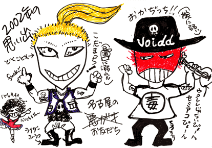

2002.10.6 鶴舞DAY TRIP
ZERO FIGHTER MEETING ＲＯＣＫ ＯＵＴ ２００２
出演：JURASSIC JADE・ZERO FIGHTER・BRIMAR・JAPANESE
COPPERHEAD
龍頭・三竦・青春エフェクツ・チョコラトル・青木マリ(TOKYO)
●ＪＵＲＡＳＳＩＣ ＪＡＤＥ’Ｓ setlists
ドク・ユメ・スペルマ
香港庭園
Ｐｌａｓｔｉｃ Ｗａｔｅｒ Ｍｏｔｈｅｒ
G.D.G
新曲
新曲
ＨＹＰＥＲＴＯＮＩＣ ＷＯＮＤＥＲＦＵＬ ＭＯＮＵＭＥＮＴ
新曲
くたばりやがれ
新曲
Ａｆｔｅｒ Ｋｉｌｌｉｎｇ Ｍａｍ
D-DAY～鏡よ鏡
アンコール：
ドク・ユメ・スペルマ
●MEMORY of HIZUMI●

●ＭＥＭＢＥＲ’Ｓ diary of tour
Friday 21th.June.2002
ＮＯＢ
１２：００に、いつもリハーサルに利用しているスタジオの前で待ち合わせる。GEORGE少し遅れる。
完全に重量オーバーの機材車で（横から見れば一目両全）首都高にのる。まえのりだから、今日中に名古屋の宿に着けば良いのだ。
HAYAは船舶免許は持っているが、何故か！！車の免許を持っていないので、GEORGEと俺が交互に運転する。HAYAは助手という訳で、一睡も出来ない。GEORGEがハンドルを握るときは、「メタりますよ！」とHMのCDがかかりまくる。
日本平SAで見事な「マグロかま定食」を食す。ごはんお変わり自由でありながら、大盛り。俺のことを若者と勘違いか？
１９：００定宿に到着。ビールを飲みながら、弦の交換。
いつも行く串揚げ屋で八丁味噌づくし。明日は頑張るぞ！と言葉にこそしないが、熱い気持ちの勢いで飲みまくり、クランクランになる。就寝。ふと目がさめると、執拗なノックの音。ドアを開けると、自分の部屋のドアをノックしている浴衣姿のHAYA。オートロックで締め出された大酔っ払いの淋しい姿。「ノックしてどうするんだよ！」
GEORGE
ＨＡＹＡ
初日
さあ出発です。いきなり遠田さんからメール、遅刻です。道中私は助手席です。寝れません。（後ろで寝てる人が羨ましい？でも運転しないしねぇ）
途中日本坂？パーキングエリアで飯、おかわり自由！素敵です。気持ち悪くなるぐらい食いまくり。
さて名古屋です。なにかちょっと前に来たばかりの様な気がしますが、とりあえず居酒屋へ、味噌串かつとどて煮、どて煮飯と味噌三昧！
満足してコンビニで酒とツマミを買ってホテルで一杯。その後何かあった様ですが私は何も知りません、何もしてません！
Saturday 22th.June.2002
ＮＯＢ
１２時入り。イヴェントだから、かなり早い。つまり、リハーサルが終わってから本番までが凄まじく長いということだ。
リハはすっきりやれた。中音（ステージの中のモニターなどの具合）は悪くない。とてもやり易いライブハウスだ。
リハを終え、食事をしょうと私立病院（前回来た時HAYAたちが利用したようです。）を目指していたら、前方に公民館や図書館が見えた。貪る様な読書家（本オタク）の俺だから、黙っていられない。が、まずは腹ごしらえ。図書館の地下の食堂でランチを。図書館一階の検索用PCで大江健三郎を調べる。かつて愛知県では、大江は「読んじゃいけない！作家」に指定されていたが、現在はノーベル賞のお墨付きだから、手のひらを返したように揃っている。（ああ！馬鹿馬鹿しい！）演劇の書架で寺山修司を探す。一冊もない。全てが借りられているわけじゃないだろう。こんな感じが俺のロック魂（笑）に火を点ける。
ありがたい応援に励まされ、新曲も披露し、気持ち良いライブをやれた。器材を片付けようと外に出ると土砂降り。GEORGEとどんどん片付けていたら、遅れてきたHAYAが俺のマーシャル箱（SP)を一人で持ち上げようとしたとたん、引きつっている。やってしまった。「破滅の音」。
12時を回っても、トリのZERO FIGHTERさんの演奏が続く。
ホテルに戻り、メンバーのみの打上げ。腰の痛みを忘れる為に（アルコールを摂取すれば、何だって忘れるんだが・・・。）ガブガブとアルコールを飲む男一名。楽しいライブを振り返りながら飲み。しかし、話題は何故か、「男性にしかないあの部分をぶつけると何故痛いのか？」に変わる。
GEORGE
ＨＡＹＡ
昨日の事などすっかり忘れ（覚えてないだけか？）、さあ本番、ライブです。
イベントのため入りが早い！リハを終え、飯です！味噌かつどんを喰らいます！もうしばらく味噌はいいっす。
空き時間に鶴舞を歩いてると、古本屋が多いんです、素敵ですねぇ素ばらしい町です、鶴舞。
そんなこんなでライブです、あつさんが言ってくれた通り名古屋では最近ない位の盛りあがり！非常に楽しいライブに大感謝です。呼んでくれた方、見に来てくれた皆様、本当に有難うごさいました、感謝です。
と、良い事ばかりではありませんで、楽しいライブを終え、アンプを運んでいたら、腰からくちゅっ！と言うかぱちっ！といった音が聞こえ、腰に焼けひばちを刺された様な熱と痛みが・・・・
そうですぎっくり腰です。
その後、腰が曲がらず、背中も動かせず、打ち上げも出れませんでした。皆様すいませんでした。
大丸（？）ラーメンも行けず、ホテルに帰って背中を壁に押しつけながら安ワインをざぶざぶ飲んでフテ寝です。
でもよく考えたら酒飲んだらいかんよなぁ。
医者におこられました。はい。
Sunday 23th.June.2002
ＮＯＢ
10時にホテルのフロントに集合。夕方には都内に着く予定。
帰りは「祭りのあと」と言った感じでなんとも淋しいのだ。昨夜のばかっ話が嘘のように静かだ。
サービスエリアで車から降りるたびに、腰からゆっくり歩いていくHAYA。
GEORGE
ＨＡＹＡ
さて朝、やはり痛む腰をかかえつつ東京へ。新幹線で帰りたかった所ですがそんな金もなく、助手席へ、席に座ると地蔵の様に動けません。
休憩の時や便所の時、時速40㎝で移動です。
ライブ以外はツキに見はなされた様です、完璧に。（つーか遠田さんと長谷川さんに迷惑かけまくり、申し訳ないっす）
実は東京に帰って、ギターバーベのライブ（しかもCD発売記念）に行く予定でしたが全てパァ、家に帰って荷物を置いて病院直行です。広尾ER（だっけ？）で治療を受け、ERを取材しに来てたTVの人たちに肩透かしを喰らわしつつ帰宅です、はぁ
●BBS comment
お疲れさまでした 投稿者：あつ 投稿日：10月 7日(月)01時55分41秒
家に着いたら1:30でした。明日、仕事できるかな？？
名古屋のライブ良かったです。名古屋で見るライブは盛り上がらずマッ
タリとした感じが多いのですが、今日は盛り上がりましたね。調子に
乗って、年甲斐も無くダイブしてしまいました。
メンバーの皆様とお話できて嬉しかったです。次回、大阪に行く予定で
すので、そのときはゆっくり話をしたいです。では、どうもありがとう
ございました。
おつかれさまでした 投稿者：okazy 投稿日：10月 7日(月)12時50分48秒
皆様お疲れ様でした 久々に大暴れ！新曲もあいかわらずJJ節が炸裂し
ててさすがでした。次回はもっとお話いやお説教してくださいヒ
ズミ様！
体中痛いです。（遅れてやってきます。） 投稿者：NOB-JURASSIC
JADE 投稿日：10月 8日(火)21時49分50秒
鶴舞DAY TRIPに来てくださった皆さん！ありがとうございました。
生憎の雨でしたが、沢山の人に見てもらい、応援され、勇気付けられま
した。
新曲を名古屋で披露出来たのも、嬉しかったです。
＞あつ 様
ありがとう！翌朝ホテルの部屋でチェックしたら、書き込みが既にして
あって、とても嬉しかったです。大阪で逢いましょう。
＞okazy 様
いつも来てくれてありがとう。飲んで話したかった。次は是非！
そんなにHIZUMIに叱られたいですか？（笑）
サンプルありがとう。じっくり聞かせてもらいます。
こんにちわ 投稿者：SLITER安達 投稿日：10月 9日(水)07時13分07秒
今回も名古屋のライブ楽しかったです。PM１２：００入りでAM１２：０
０終演のイヴェントの仕切りとライブハウスの営業とバンドとしての出演
をしたZERO FIGHTERのギターリストのバイタリティーはすごい。新曲も過
激な仕上がりだったので次回も楽しみにしてます。
＞名古屋の皆さん 投稿者：GEORGE-JURASSIC
JADE 投稿日：10月10日(木)15時35分18秒
雨の中、たくさんの方々に来ていただきました。感謝します！
まったくの新曲を、また名古屋から披露しちゃいました。
曲名？まだ秘密です！本当は知らないだけですがね。(メンバーなんだけど・・汗)
最近俺の機材が言う事聞いてくれません。
アレコレ繋いでるせいで、何が悪いのかハッキリしません。
でもアンプ直にはしません(意地)。
アレを一まとめにして初めて俺の｢素の音｣が完成するのです。
しかし、原因次第では足元の模様替えを敢行します。貧乏ですが。
BACK TO